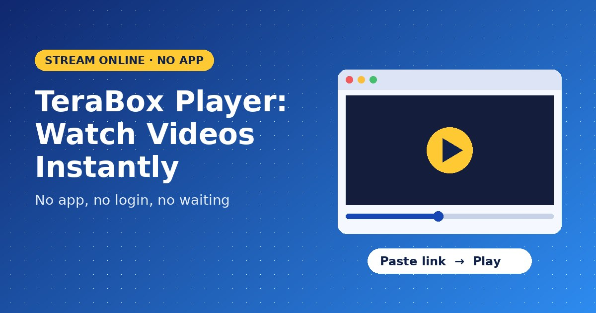
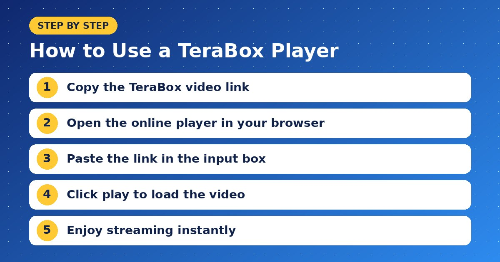
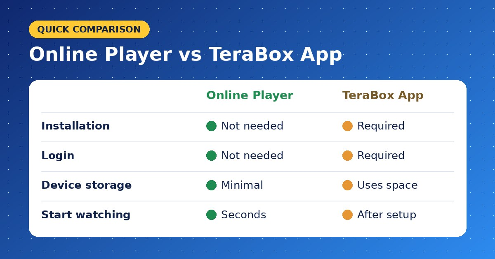

TeraBox Player: Watch TeraBox Videos Online Instantly Without the App

Have you ever received a TeraBox video link, only to be told you must install an app, create an account and wait for a slow download before you can watch it? A TeraBox Player removes all of that hassle. It lets you stream shared TeraBox videos directly in your web browser, on any device, within seconds. In this article, you will learn what a TeraBox Player is, how it works, its standout features and how to get the best streaming experience.
What Is a TeraBox Player?
A TeraBox Player is an online video player that plays videos from public TeraBox share links without requiring the official app. Instead of downloading a large file first, you paste the link and the player streams the video right on the page. It works much like watching a video on any popular streaming site: press play, and the content starts.
This is especially useful for people who receive lectures, tutorials, movies, short clips or recorded meetings through TeraBox and simply want to watch them quickly.
Why People Prefer an Online TeraBox Player
TeraBox is a powerful cloud storage platform, but its viewing experience for shared links can be inconvenient for many users. Here is why an online TeraBox Player has become so popular:
- No app installation: Watch videos without filling your phone with another heavy app.
- No account needed: Skip sign-up forms and keep your personal details private.
- Instant playback: Start watching in seconds instead of waiting for a full download.
- Saves device storage: Streaming means nothing large is stored on your phone.
- Works on any device: Android, iPhone, tablets, laptops and desktops are all supported.
How to Use a TeraBox Player Step by Step
Watching a TeraBox video online is quick and simple. Follow these steps:

- Copy the video link: Open the shared TeraBox link and copy the full URL.
- Open the player: Visit an online TeraBox Player in Chrome, Safari, Firefox or Edge.
- Paste the link: Place the URL in the input box on the page.
- Click play: The player loads the video details, including title and thumbnail.
- Enjoy streaming: Watch the video instantly, or choose to download it if the option is available.
The whole process usually takes less than a minute, even for first-time users.
Key Features of a Good TeraBox Player
Not every online player offers the same experience. A professional TeraBox Player should include:
- Smooth HD streaming: Clear playback with minimal buffering on a stable connection.
- Full player controls: Play, pause, seek, volume control and fullscreen mode.
- Mobile-friendly design: A clean layout that fits small screens perfectly.
- Download option: The ability to save a video for offline viewing when needed.
- Multiple format support: Compatibility with common formats such as MP4, MKV and others.
- Fast loading: Lightweight pages that open quickly, even on slower networks.
TeraBox Player vs TeraBox App: Which Is Better?
The official app is useful if you regularly upload, organize and back up your own files. However, if your goal is simply to watch videos that others share with you, an online TeraBox Player is the faster and lighter choice.

The app requires installation, login and storage space. The online player needs only a browser and a link. For quick viewing, especially on low-storage phones, the browser-based option clearly wins.
Tips for the Best Streaming Experience
To get smooth, uninterrupted playback, keep these practical tips in mind:
- Use a stable Wi-Fi or 4G/5G connection for HD videos.
- Close unused browser tabs to free up memory.
- Lower the video quality if you notice frequent buffering.
- Make sure the shared link is public and has not expired.
- Keep your browser updated for better video support.
Is It Safe to Use a TeraBox Player?
Yes, a trusted online TeraBox Player is safe to use. It works only with publicly shared links and never asks for your TeraBox password or personal account details. Still, it is wise to open links only from people and sources you trust, avoid clicking suspicious pop-ups, and watch only content you have the right to access.
Conclusion
Watching shared videos should be simple, fast and free, without forced apps or long downloads. A reliable online player makes that possible on any device, from your phone to your laptop. Next time someone sends you a TeraBox video link, paste it into a fast and free TeraBox Player and start streaming instantly. Bookmark it now so your favorite videos are always just one click away.